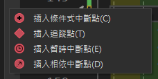
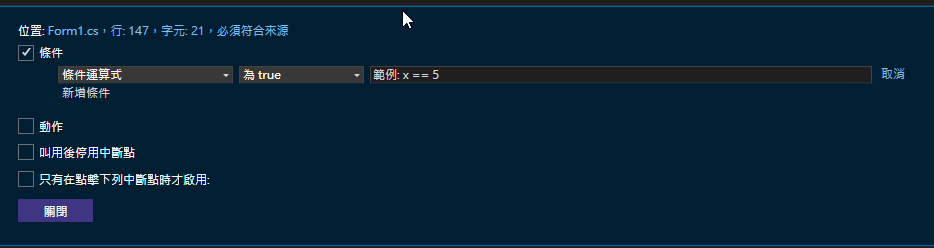
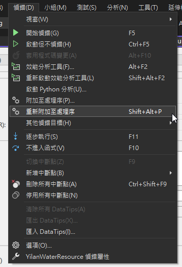

Visual Studio 除錯神技！新手工程師必學的 Debug 實戰技巧
為什麼要學習除錯技巧？
身為工程師，寫程式只是第一步，找出並解決程式中的問題才是真正的挑戰。Visual Studio 提供了強大的除錯工具，善用這些工具不只能幫助我們快速找出 Bug，更能讓我們深入理解程式的運作方式。本文將帶您從基礎到進階，完整掌握 Visual Studio 的除錯技巧！
文章大綱
- 除錯基本概念
- 中斷點的使用
- 重要快捷鍵
- 進階除錯技巧
- 效能分析工具
- 遠端除錯完整教學
- 常見問題解答
- 除錯最佳實踐
除錯基本概念
1. 中斷點（Breakpoint）的使用
中斷點是除錯中最基本也最重要的功能。當程式執行到中斷點時，會暫停執行，讓我們能夠檢查當前的程式狀態。
// 一般中斷點：直接在行號左側點擊
public void ProcessData()
{
var data = GetData(); // ← 在這裡點擊行號設置中斷點
var result = ProcessData(data); // 程式會在執行到這行時暫停
}
// 條件中斷點：右鍵中斷點 → 條件
public void ProcessLocation(string location)
{
if (location == "台北市") // ← 設置條件：location == "台北市"
{
ProcessTaipeiData(); // 只有當 location 是 "台北市" 時才會中斷
}
}

2. 重要的除錯快捷鍵
| 快捷鍵 | 功能 | 使用場景 |
|---|---|---|
| F5 | 開始除錯 | 啟動程式並進入除錯模式 |
| F10 | 逐步執行 (Step Over) | 執行當前行，不進入方法內部 |
| F11 | 逐步進入 (Step Into) | 進入方法內部逐步執行 |
| Shift+F11 | 逐步跳出 (Step Out) | 執行完當前方法並返回 |
| Ctrl+Shift+F5 | 重新啟動 | 重新開始除錯 |
| Ctrl+Alt+P | 附加至處理程序 | 連接到執行中的程式進行除錯 |
3. 進階除錯技巧
public class DebugDemo
{
// 示範各種除錯技巧的綜合應用
public void ProcessUserData(List<User> users)
{
// 使用 Debug.WriteLine 輸出除錯訊息
System.Diagnostics.Debug.WriteLine($"開始處理使用者資料：{users.Count} 筆");
foreach (var user in users)
{
try
{
// 使用條件式中斷點檢查特定使用者
if (user.Name == "測試人員")
{
ValidateUserData(user);
}
// 使用 Debug.Assert 檢查條件
System.Diagnostics.Debug.Assert(user.Age >= 0,
"使用者年齡不能為負數");
ProcessUserInfo(user);
}
catch (Exception ex)
{
// 使用 Debugger.Break() 在發生例外時中斷
System.Diagnostics.Debugger.Break();
LogError(ex);
}
}
}
// 示範非同步程式的除錯
public async Task ProcessUserDataAsync(List<User> users)
{
foreach (var user in users)
{
// 在非同步方法中使用中斷點
await ValidateUserDataAsync(user);
// 使用 Task.WhenAll 時的除錯技巧
var tasks = new[]
{
UpdateUserProfileAsync(user),
UpdateUserPreferencesAsync(user)
};
await Task.WhenAll(tasks);
}
}
}4. 效能分析工具
// 使用效能分析工具追蹤耗時的程式碼
public void ProcessLargeData()
{
var stopwatch = new Stopwatch();
stopwatch.Start();
// 在效能分析器中會顯示這段程式碼的執行時間
for (int i = 0; i < 1000000; i++)
{
ProcessItem(i);
}
stopwatch.Stop();
Debug.WriteLine($"處理時間：{stopwatch.ElapsedMilliseconds}ms");
}
// 記憶體使用分析
public void ProcessImages()
{
using var image = new Bitmap("large_image.jpg");
using var graphics = Graphics.FromImage(image);
// 在記憶體分析器中可以追蹤這些物件的生命週期
ProcessImageData(image, graphics);
}5. 遠端除錯完整教學
遠端除錯允許您在開發機上對正式機或其他環境的程式進行除錯。以下是完整的設定步驟：
5.1 系統架構圖
5.2 正式機設定步驟
安裝遠端工具
# 從 Visual Studio 下載頁面下載對應版本的 Remote Tools # https://visualstudio.microsoft.com/downloads/ # 選擇 Remote tools for Visual Studio 2022執行遠端工具
# 以系統管理員身分執行 # 路徑：C:\Program Files\Microsoft Visual Studio\2022\Remote Debugger\x64\msvsmon.exe設定防火牆
# 開啟必要的 port (預設為 4024) New-NetFirewallRule -DisplayName "VS Remote Debugger" -Direction Inbound -LocalPort 4024 -Protocol TCP -Action Allow
5.3 開發機設定步驟
- 開啟 Visual Studio
- 選擇 偵錯 > 重新附加至處理序 (Shift+Alt+P)
 - 在 連接類型 選擇 遠端
- 輸入正式機的連線資訊（格式：
機器名稱:port或IP位址:port） - 點選「尋找」尋找可用的處理程序
- 選擇要除錯的處理程序
- 點選「Attach」開始除錯
5.4 安全性注意事項
- 確保開發機和正式機的程式碼版本相同
- 正式機需要有 PDB 檔案
- 建議在測試環境先測試
- 遠端除錯會影響程式效能
- 建議使用 VPN 或專用網路
6. 常見問題（FAQ）
遠端除錯問題處理
無法連線時的檢查清單
- 確認防火牆設定
- 確認 Remote Tools 版本是否與 Visual Studio 版本相符
- 檢查網路連線狀態
- 確認使用者權限
找不到處理程序
- 確認程式是否正在運行
- 確認是否有足夠權限
- 檢查是否選擇正確的處理程序類型
無法中斷點
- 確認 PDB 檔案是否存在
- 確認程式碼版本是否相符
- 檢查是否為 Release 版本
一般除錯問題
中斷點不會停下來怎麼辦？
- 確認是否在 Debug 模式執行
- 檢查是否編譯為 Release 版本
- 確認中斷點所在的程式碼是否真的被執行到
如何在 Production 環境除錯？
- 使用記錄檔（Log）追蹤問題
- 實作健康狀態檢查（Health Check）
- 考慮使用遠端除錯（需謹慎使用）
非同步程式除錯技巧？
- 使用
async/await關鍵字讓程式碼更容易追蹤 - 在重要的 await 點設置中斷點
- 善用工作監視器（Tasks Window）
- 使用
7. 實用除錯建議
- 善用中斷點條件，避免過多不必要的中斷
- 使用 Debug.WriteLine 而不是 Console.WriteLine 來輸出除錯訊息
- 配合版本控制，在提交前移除除錯用的程式
- 使用有意義的變數名稱，讓除錯更容易
- 定期檢查效能分析報告，及早發現潛在問題
- 在開發過程中就建立完整的例外處理機制
- 善用版本控制系統的分支功能，方便追蹤問題
- 建立團隊的除錯最佳實踐指南
8. 建立團隊的除錯文化
程式碼審查中注意的除錯相關項目
// 好的例外處理範例 public async Task<User> GetUserAsync(int id) { try { // 加入適當的日誌記錄 _logger.LogInformation($"開始查詢使用者資料: {id}"); var user = await _userRepository.GetByIdAsync(id); if (user == null) { _logger.LogWarning($"找不到使用者: {id}"); throw new UserNotFoundException(id); } return user; } catch (Exception ex) when (ex is not UserNotFoundException) { // 記錄意外的例外 _logger.LogError(ex, $"查詢使用者時發生錯誤: {id}"); throw; } }團隊除錯最佳實踐
- 建立統一的日誌記錄標準
- 定期進行程式碼審查時檢查除錯相關程式碼
- 共享團隊成員的除錯經驗和技巧
- 建立問題排除的標準流程
- 維護共同的除錯工具和設定
結語
除錯是每個工程師必備的技能，透過本文介紹的各種技巧，從基本的中斷點使用到進階的遠端除錯，相信能幫助你更有效率地找出並解決問題。記住，好的除錯能力不是一朝一夕就能培養的，需要在日常開發中不斷練習和累積經驗。
以下是一些重要的學習重點：
- 善用 Visual Studio 的除錯工具，特別是中斷點和監看視窗
- 學會遠端除錯，讓你能處理更複雜的環境問題
- 培養系統性的除錯思維，從問題現象追查到根本原因
- 重視效能分析，及早發現潛在問題
- 建立良好的除錯習慣，讓程式碼更容易維護
最後，希望這篇文章能幫助你在程式開發的道路上少一些挫折，多一些成就感。如果你有任何問題或經驗想分享，歡迎在下方留言討論！